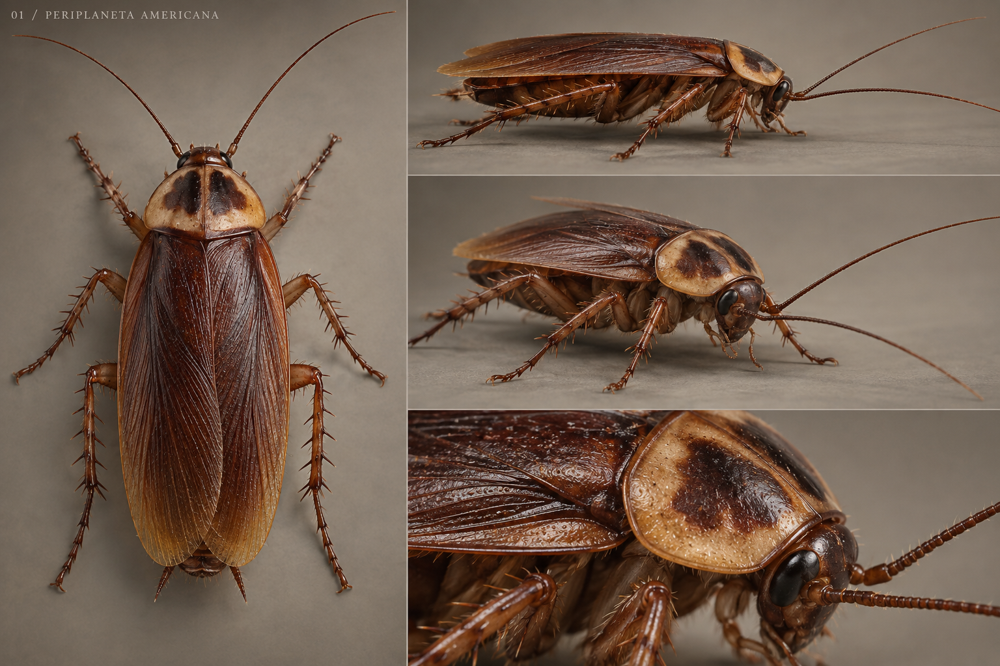
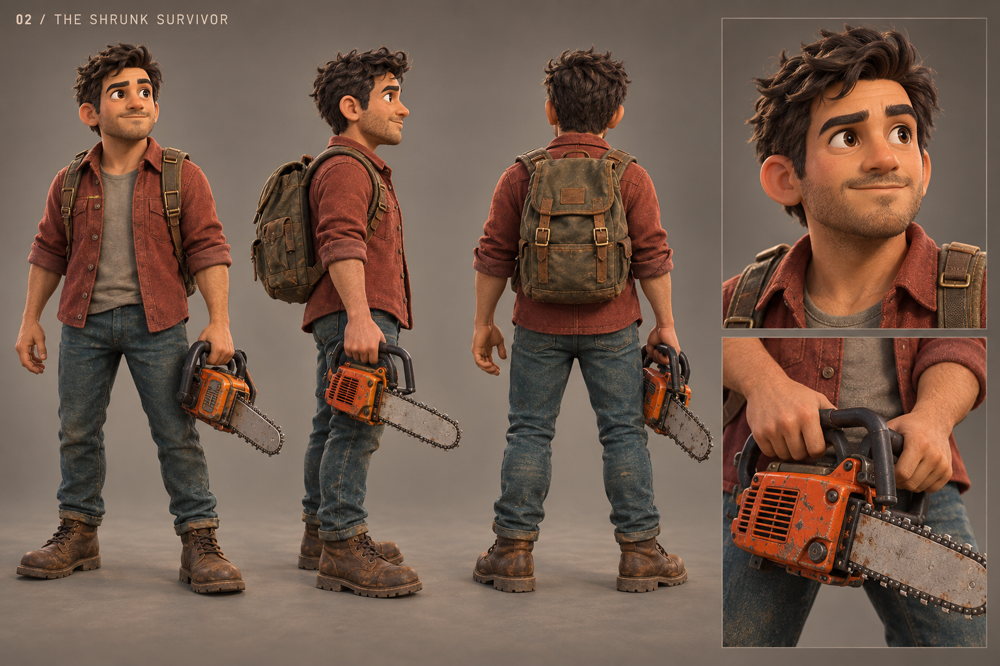
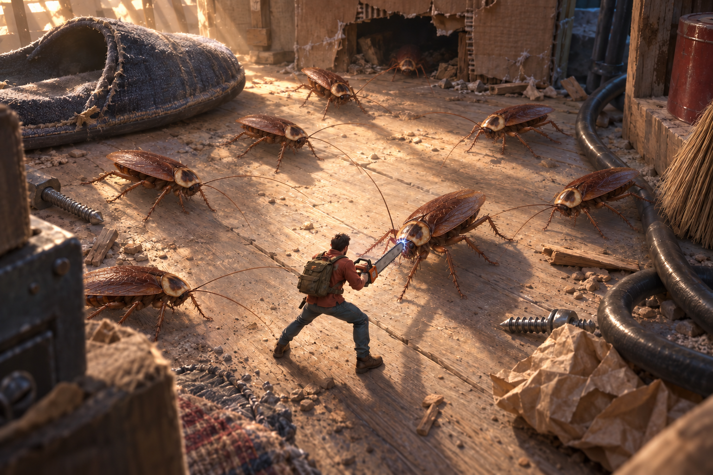

已确认的正式建模美术基准。
三张美术基准已确认。蟑螂、主角、电锯的高低模与烘焙制作现已启动并接入首轮资产；查看制作对照可检查实际进展和仍存在的差距。
01 · 美洲大蠊
参照《蚂蚁帝国》的昆虫质感：扁长红褐色身体、浅黄色前胸背板边缘、长触角、细长有棘的六足。最终解剖结构以实物资料校正。

02 · 缩小的人类主角
参照《双人成行》的角色方向：富有表情的造型、红褐色织物衬衫、做旧背包与牛仔裤，保留缩小人类的设定。

03 · 杂物间与整体搭配
《双人成行》方向的微缩环境，加入写实美洲大蠊。破纸箱、布拖鞋、线缆和扫帚形成探索通道与遮挡，暖光和冷色暗部共同建立空间。

完整制作与对照要求
- 保存模型作者、来源、许可与原始文件；逐项评估可用性。
- 按确认稿与真实形态完成高精度造型；六足、左右翅与眼部按破坏需求拆分。
- 制作游戏网格、UV 和不同距离的精度版本；烘焙法线、遮蔽与细节贴图，独立制作粗糙度和颜色。
- 完整绑定关节，制作爬行、转向、突进、失衡、断足与死亡动作。
- 保留高精度源文件、烘焙设置、贴图和游戏导出文件；逐项核对游戏内的轮廓、比例、颜色、反光和阴影。
- 一个小场景达到标准后再扩展全部资产，并在手机浏览器验证画面和性能。
这轮战斗调整
| 项目 | 原来 | 现在 |
|---|---|---|
| 初始魔杖伤害 / 射程 | 12 / 8.2 | 8 / 5.0 |
| 普通蟑螂生命 | 56 | 92；后续房间继续增长 |
| 视野 / 追击记忆 | 6 起 / 3 秒 | 9 起 / 7.5 秒 |
| 追击 / 突进速度 | 约 0.96 / 2.22 | 2.05 / 6.4 |
| 突进节奏 | 少数单位缓慢飞行 | 0.42 秒预备、0.46 秒冲刺、0.65 秒恢复 |
| 战斗吸引 | 无 | 声音调查、近邻警戒、绕障接近 |
| 连续控制 | 可反复刷新钉住 | 钉住 4 秒不刷新；挣脱保护与冻结衰减 |
| 死亡 | 瞬间翻面，缩小移除 | 倒地、飞溅、短促抽动，停留后渐隐 |
以上距离、速度为游戏单位。强度和成长曲线仍需试玩校准；新关节步态已接入，实际手机画面与性能仍待验证。
试听新增的湿润破裂与突进提示：
动作依据与资产候选
美洲大蠊在研究中的一段奔跑速度范围使用交替三足步态：左前、右中、左后与另一组三足交替支撑。复刻时还需要落脚点、关节转动、身体起伏与转向配合，不能只给腿部添加摆动。
死亡不能统一处理成翻肚；体液也不应使用哺乳动物式红色血液。主动朝战斗集结是为了游戏挑战性设定的行为。